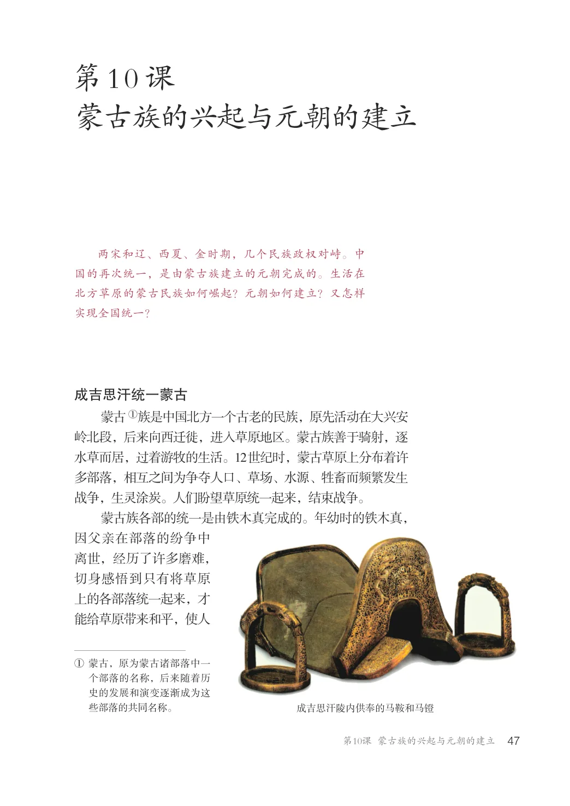
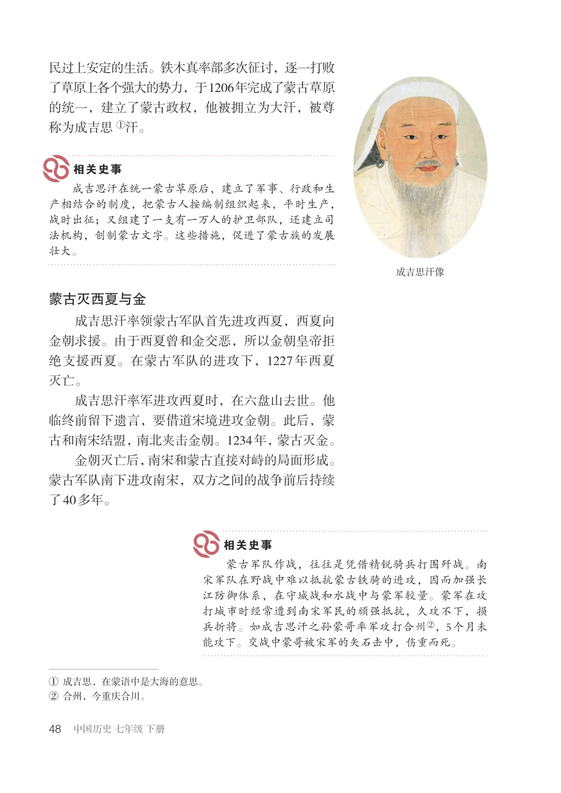
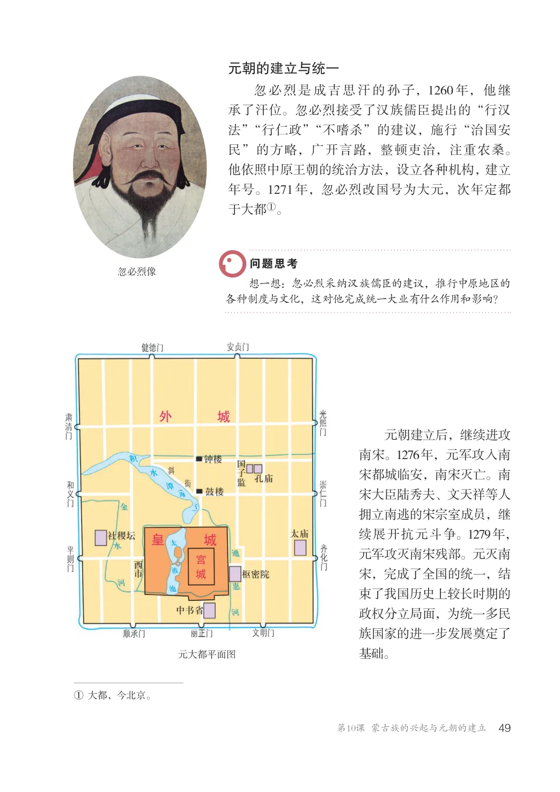
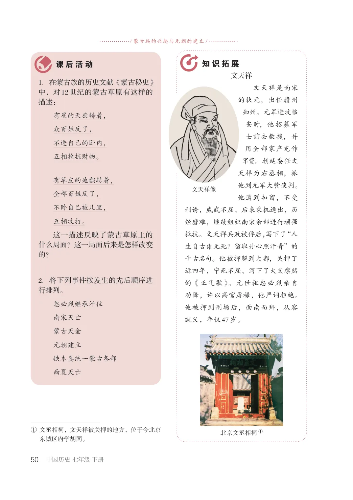

第2单元 · 教材第 47–50 页
第10课 蒙古族的兴起与元朝的建立
文字版依据教材 PDF 文本层整理；复杂地图、图表及版面关系请以右侧教材原页为准。
蒙古族的兴起与元朝的建立
两宋和辽、西夏、金时期，几个民族政权对峙。中国的再次统一，是由蒙古族建立的元朝完成的。生活在北方草原的蒙古民族如何崛起？元朝如何建立？又怎样实现全国统一？
成吉思汗统一蒙古
蒙古①族是中国北方一个古老的民族，原先活动在大兴安岭北段，后来向西迁徙，进入草原地区。蒙古族善于骑射，逐水草而居，过着游牧的生活。12世纪时，蒙古草原上分布着许多部落，相互之间为争夺人口、草场、水源、牲畜而频繁发生战争，生灵涂炭。人们盼望草原统一起来，结束战争。蒙古族各部的统一是由铁木真完成的。年幼时的铁木真，因父亲在部落的纷争中离世，经历了许多磨难，切身感悟到只有将草原上的各部落统一起来，才能给草原带来和平，使人
①蒙古，原为蒙古诸部落中一
个部落的名称，后来随着历史的发展和演变逐渐成为这些部落的共同名称。
成吉思汗陵内供奉的马鞍和马镫

民过上安定的生活。铁木真率部多次征讨，逐一打败了草原上各个强大的势力，于1206年完成了蒙古草原的统一，建立了蒙古政权，他被拥立为大汗，被尊称为成吉思①汗。
成吉思汗在统一蒙古草原后，建立了军事、行政和生产相结合的制度，把蒙古人按编制组织起来，平时生产，战时出征；又组建了一支有一万人的护卫部队，还建立司法机构，创制蒙古文字。这些措施，促进了蒙古族的发展壮大。
成吉思汗像
蒙古灭西夏与金
成吉思汗率领蒙古军队首先进攻西夏，西夏向金朝求援。由于西夏曾和金交恶，所以金朝皇帝拒绝支援西夏。在蒙古军队的进攻下，1227年西夏灭亡。成吉思汗率军进攻西夏时，在六盘山去世。他临终前留下遗言，要借道宋境进攻金朝。此后，蒙古和南宋结盟，南北夹击金朝。1234年，蒙古灭金。金朝灭亡后，南宋和蒙古直接对峙的局面形成。蒙古军队南下进攻南宋，双方之间的战争前后持续了40多年。
蒙古军队作战，往往是凭借精锐骑兵打围歼战。南宋军队在野战中难以抵抗蒙古铁骑的进攻，因而加强长江防御体系，在守城战和水战中与蒙军较量。蒙军在攻打城市时经常遭到南宋军民的顽强抵抗，久攻不下，损兵折将。如成吉思汗之孙蒙哥率军攻打合州②，5个月未能攻下。交战中蒙哥被宋军的矢石击中，伤重而死。
①成吉思，在蒙语中是大海的意思。②合州，今重庆合川。

元朝的建立与统一
忽必烈是成吉思汗的孙子，1260年，他继承了汗位。忽必烈接受了汉族儒臣提出的“行汉法”“行仁政”“不嗜杀”的建议，施行“治国安民”的方略，广开言路，整顿吏治，注重农桑。他依照中原王朝的统治方法，设立各种机构，建立年号。1271年，忽必烈改国号为大元，次年定都于大都①。
忽必烈像
想一想：忽必烈采纳汉族儒臣的建议，推行中原地区的各种制度与文化，这对他完成统一大业有什么作用和影响？
元朝建立后，继续进攻南宋。1276年，元军攻入南宋都城临安，南宋灭亡。南宋大臣陆秀夫、文天祥等人拥立南逃的宋宗室成员，继续展开抗元斗争。1279年，元军攻灭南宋残部。元灭南宋，完成了全国的统一，结束了我国历史上较长时期的政权分立局面，为统一多民族国家的进一步发展奠定了基础。
元大都平面图
①大都，今北京。

/ 蒙古族的兴起与元朝的建立/
文天祥
1．在蒙古族的历史文献《蒙古秘史》中，对12世纪的蒙古草原有这样的描述：
文天祥是南宋的状元，出任赣州知州。元军进攻临安时，他招募军士前去救援，并用全部家产充作军费。朝廷委任文天祥为右丞相，派他到元军大营谈判。他遭到扣留，不受利诱，威武不屈，后来乘机逃出，历经磨难，继续组织南宋余部进行顽强抵抗。文天祥兵败被俘后，写下了“人生自古谁无死？留取丹心照汗青”的千古名句。他被押解到大都，关押了近四年，宁死不屈，写下了大义凛然的《正气歌》。元世祖忽必烈亲自劝降，许以高官厚禄，他严词拒绝。他被押到刑场后，面南而拜，从容就义，年仅47岁。
有星的天旋转着，众百姓反了，不进自己的卧内，互相抢掠财物。
有草皮的地翻转着，全部百姓反了，不卧自己被儿里，互相攻打。这一描述反映了蒙古草原上的什么局面？这一局面后来是怎样改变的？
文天祥像
2．将下列事件按发生的先后顺序进行排列。
忽必烈继承汗位南宋灭亡蒙古灭金元朝建立铁木真统一蒙古各部西夏灭亡
①文丞相祠，文天祥被关押的地方，位于今北京
北京文丞相祠①
东城区府学胡同。
